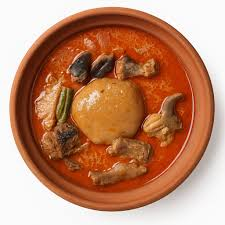

Home
KOKONTE | FACE THE WALL MONSTER

FACE THE WALL MONSTER | PREPARATION
Ingredients
Cassava Flour
Water
Onions
Tomatoes
Pepper
Salt
Meat
Dried Fish
Preparation Process
Boil water in a pot
Gradually add cassava flour while stirring continuously.
Continue stirring until the mixture thickens and becomes smooth.
In a separate pot, heat oil and sauté onions, tomatoes, pepper and salt [per your taste] for the light soup.
Add a piece of meat and desired quantity of dried fish to the soup and cook until tender.
Serve the kokonte with the light soup spread all over in the bowl served.